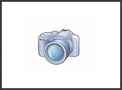

| The Shortline railroads of Owego, New York. Page 6 - The Lehigh Railway. 
(much
more
detail
on
each
locomotive
is below)
The creation of the Lehigh Railway in late 2008 was the catalist for putting this entire "Shortlines of Owego" webpage collection together! It has always bothered me that I didnt keep better track of the TC/TS/OH operations in Owego these past 20 years..I have been driving through Owego quite a lot since the late 1980's, always stopping by the yard to check things out whenever i'm in the area..but I never bothered to keep an accurate record or roster. no
excuses this time! News first reached the internet in mid-2008 about a possible new shortline to operate the Norfolk Southern "Lehigh Line" south out of Sayre, PA. By October 2008 the rumour was confirmed as true! and the Owego & Harford is going to set up a new shortline, calling it the "Lehigh Railway" which will lease and operate the former LV mainline from Norfolk Southern between the Sayre yard and Mehoopany, PA, where it meets the Reading & Northern. The interchange point with NS is technically listed as Athens, not Sayre, beause the actual division point is going to be MP 269.5, which is near the South Main street crossing in Athens, just west of the Chemung River bridge. however the interchange yard will likely be the yard area immediately south of the Sayre passenger station and the Packer Ave bridge, which will remain on the "NS side" (update..further
developments
show the base of operations is Towanda, not Sayre
as originally Norfolk Southern will continue to operate the main portion of the Sayre yard, from MP 269.5, north past the Sayre station, and north to Waverly. The new Lehigh Railway will technically not extend north of MP 269.5, although there are provisions for the Lehigh Railway to stray onto NS rails up into the interchange yard and perhaps to the former LV engine terminal/walkbridge area, for switching purposes. Excting
news for Sayre! from a railfan perspective, this
promises to be very interesting! The two
LRWY units arrived in Sayre on January 21, 2009,
and operations began a few days later..see the
timeline below for more details.
For a
history of this line, and the history of the
railroads in the Waverly/Sayre/Athens
2008
- Summer - the first vague hints that
something is happening for Sayre are first heard.
2008 -
September 5 - the first mention of the O&H
running the NS Lehigh Secondary 2008 -
October 28 - Its
official! no longer in the rumour
catagory! 2008 -
December, Susquehanna sells two of its
locomotives, GE U23B 2302 and 2304.
2009 -
January 5, the first "sneak peek" of a Lehigh
Railway locomotive hits
the internet!
These
two
U23B's
are
members
of
the
last order of U-boats built for North America!
2009 -
January 17 - The two Lehigh Railway units, 2302
and 2304, have been painted, 2009 -
January 21 - the units arrive
in Sayre!
2009 -
January 24 - The LRWY U-boats are seen
in Towanda, and it is determined that the 2009 -
February 9 - First recorded
operation of a LRWY train using the LRWY U-boats. 2009 -
February 10 - First photos
of the LRWY units in service hit the internet, For the
first year of the Lehigh Railway's existance, the
railroad operated with the two U-boats, 2010 -
January 7 - a Reading & Northern unit arrives
in Towanda! R&N 802 is photographed
2010 -
September 26 - And news
of the 4th, 5th and 6th units arrives! Three
GP40's this time, 2010 -
October 20 - the first GP40 is spotted
being delivered to the LRWY in Sayre, lettered 2010 -
December 19 - LRWY 2302, one of the first two
locomotives, leaves the LRWY and 2011 -
January - Two of the GP40's are operating on the
Lehigh Railway, 3001 and 3003.
Concerning those LS reporting marks: The story is that ALL
locomotives coming to the Luzerne &
Susquehanna, Owego & Harford, or Lehigh
Railway, ALL get LS reporting marks when they move
over the Class-1's for delivery..but this does
*not* mean they are all in fact coming to, or
destined for, the L&S itself.. In the
case of the three ex-P&W GP40's, all arrived
with LS reporting marks, but probably none of them
are intended to work on the L&S railroad
itself..it is believed all three are meant for the
Lehigh Railway..two are currently working with the
LRWY, 3001 and 3003, and 3002 is still undergoing
some work in Pittston, and will likely join her
two sisters on the Lehigh Railway once she is
returned to service.. 2011 -
May - Two more locomotives for the Lehigh Railway!
The 7th and 8th locomotives for the 2011 -
July - GP40's 3001 and 3003 are repainted from
their P&W Orange schemes into 2011 -
July - SD40-2's 5700 and 5721 have also been
repainted into Lehigh Railway black! 2012 -
June - GP40 3002 is repainted from her P&W
scheme into LRWY black,
|
|
The U-boat's The Lehigh Railway's first two units were U23B's 2302 and 2304, which arrived at the startup of the railroad in January 2009. A third U-boat, number 2300, joined the roster in September 2010. 
   More
photos of the first two Lehigh Railway units can be
found here. There is
some confusion about the exact heritage of LRWY 2302
and 2304! The
P&W to LRWY numbers are not in doubt: P&W
2208 - BDLX 2208 - NYSW 2302 - LRWY 2302. what isnt
100% clear is the Conrail to P&W transition.. see this
thread for more discussion. The units
appear to be missing their builders plates..
|
| The GP40's Lehigh Railway's fourth, fifth and sixth units arrived in October 2010, in the form of three ex-P&W GP40's. The three new GP40's all share a somewhat common history, although they were built years apart! Two came from the Seaboard Coast Line, one from the B&O, all later were absorbed into the CSX fleet, then the three operated together with the Georgetown railroad of Texas, then the three came together as a group to the Providence & Worcester of Massachusetts, then to the Lehigh Railway. They all began life as GP40's (not dash-2's) but all were classed as GP40-3 units on the P&W, which implies they were rebuilt at some point.   |
| The SD40-2's Lehigh Railway's seventh and eighth units arrived in June 2011, in the form of two ex-CP SD40-2's.   
|
| Continue to Page 7,  Scot Lawrence
Return to "Railroads of Owego" page. Return to Scot's main page. This LRWY page last updated July 14, 2013
|


{kind=link}
{kind=link}
{kind=link}
{kind=link}
{kind=link}